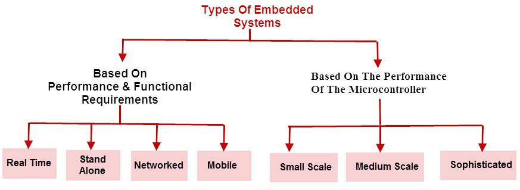
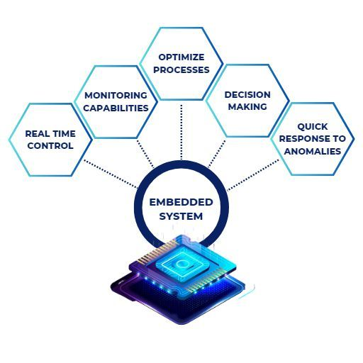

An embedded system is a specialized computing system designed to perform dedicated tasks within a larger system.
Unlike general-purpose computers, embedded systems are optimized for specific applications, offering high efficiency, reliability,
and low power consumption. They are usually built using microcontrollers or microprocessors, along with necessary software, sensors, and
other electronic components.
Embedded systems can be found in various domains, including consumer electronics, automotive systems, industrial automation, and
medical devices. They operate with minimal human intervention and are designed for real-time or near real-time processing.
Some embedded systems function independently, while others integrate with larger systems to enhance performance.
For example, a digital camera’s firmware is an embedded system that processes images and videos efficiently. Other examples include
washing machines, printers, ATMs, and microwave ovens. These systems often use lightweight operating systems or firmware specifically
designed for their function. Since embedded systems are optimized for specific tasks, they generally have lower memory and processing power
than general-purpose computers, but they excel in power efficiency and reliability.


Course Videos
Introduction to Embedded Systems
Types of Embedded Systems
Real-Time Embedded Systems: Requires real-time responses to function correctly. (e.g., Airbag Systems, Medical Monitoring Devices)
Networked Embedded Systems: Connected via networks like the internet or local networks. (e.g., Smart Home Devices, IoT Security Cameras)
Mobile Embedded Systems: Portable embedded systems integrated into mobile devices. (e.g., Smartphones, Wearable Devices)
Course Videos
Hardware Components
Why Should You Learn Embedded Systems?
Embedded systems are at the core of modern technology, powering everything from smartphones to industrial machines. Learning embedded systems can open many career
opportunities and provide valuable skills.Benefits of Learning Embedded Systems:
High Demand & Career Opportunities:Embedded systems engineers are needed in automotive, healthcare, aerospace, consumer electronics, and IoT
industries.Companies like Tesla, Apple, Samsung, and Intel constantly seek skilled professionals.
Competitive Salaries:Embedded engineers earn attractive salaries, with experienced professionals making $100,000+ per year in top markets.
Innovation & Cutting-Edge Technology:Work on AI-powered smart devices, self-driving cars, medical devices, and industrial automation.Play a role
in developing the future of IoT, robotics, and AI-driven hardware.
Strong Combination of Software & Hardware Skills: You gain expertise in C/C++, Python, Assembly, microcontrollers (ARM, PIC, AVR), and real-time
operating systems (RTOS).Understanding both hardware and software makes you more versatile in tech fields.
Job Stability & Future Growth:Embedded systems are used in critical infrastructure, consumer electronics, and smart devices, ensuring long-term
career stability.The IoT industry alone is expected to reach $1.5 trillion+ by 2030, increasing the demand for skilled engineers.
Entrepreneurship Opportunities:If you master embedded systems, you can develop your own IoT devices, robotics, or automation products and start your
own business.
Fun & Challenging Work:You get to solve real-world problems, work with physical devices, and create innovative solutions.
Unlike traditional software jobs, embedded systems involve both coding and hardware design, making it an exciting field.
Course Videos
Software Components
Career Opportunities in Embedded Systems
The embedded systems industry provides numerous career paths, each requiring expertise in hardware, software, and real-time system development. Some common job roles
include:
Embedded Software Engineer: Develops and optimizes firmware and low-level software for microcontrollers and processors.
Embedded Hardware Engineer:Designs circuit boards, selects components, and ensures compatibility with software systems.
Firmware Developer:Focuses on writing and debugging firmware that controls hardware functions.
IoT Engineer: Works on smart devices and connected systems that rely on embedded technology.
Automotive Embedded Engineer:
Specializes in software and hardware for vehicle control systems, infotainment, and ADAS (Advanced Driver Assistance Systems).
Medical Device Engineer: Designs embedded systems for healthcare devices like pacemakers and monitoring equipment.
Robotics Engineer:Develops control systems for autonomous machines and industrial robots.
These roles exist across industries such as consumer electronics, automotive, healthcare, telecommunications, aerospace, and defense. Startups, multinational corporations,
and research institutions all require embedded system professionals.
Course Videos
USB
Key Responsibilities in Embedded Systems
A professional in embedded systems is responsible for designing, developing, testing, and maintaining embedded hardware and software. Some core tasks include:
Hardware Development:Designing PCBs, selecting microcontrollers, integrating sensors, and ensuring power efficiency.
Firmware Development:Writing and debugging code in C, C++, or Python for microcontrollers and processors.
Real-Time System Development:Implementing real-time operating systems (RTOS) for time-sensitive applications.
Testing and Debugging: Using tools like oscilloscopes, logic analyzers, and simulators to ensure system reliability.
Optimization and Power Management:Reducing power consumption and optimizing performance for battery-powered devices.
Security Implementation:Ensuring embedded systems are protected against cyber threats, especially in IoT and automotive industries.
Integration and Deployment: Working with teams to integrate embedded systems into larger hardware and software ecosystems.
Overall, embedded systems is a dynamic field with promising career growth, attractive salaries, and intellectually challenging responsibilities. As technology advances,
demand for skilled embedded engineers continues to rise across various industries.
Income Potential in Embedded Systems
Salaries in embedded systems depend on factors such as experience, location, industry, and company size. Below is a general salary range based on experience:
Entry-Level (0-2 years): $50,000 – $80,000 per year
Mid-Level (3-7 years): $80,000 – $120,000 per year
Senior-Level (8+ years): $120,000 – $150,000+ per year
Embedded Systems Architects and Specialists: $150,000 – $200,000+ per year
Freelancers and consultants in embedded systems can earn even higher rates, often charging $50 – $200 per hour depending on expertise. High-demand industries like
automotive, aerospace, and healthcare tend to offer higher salaries compared to consumer electronics or IoT startups.